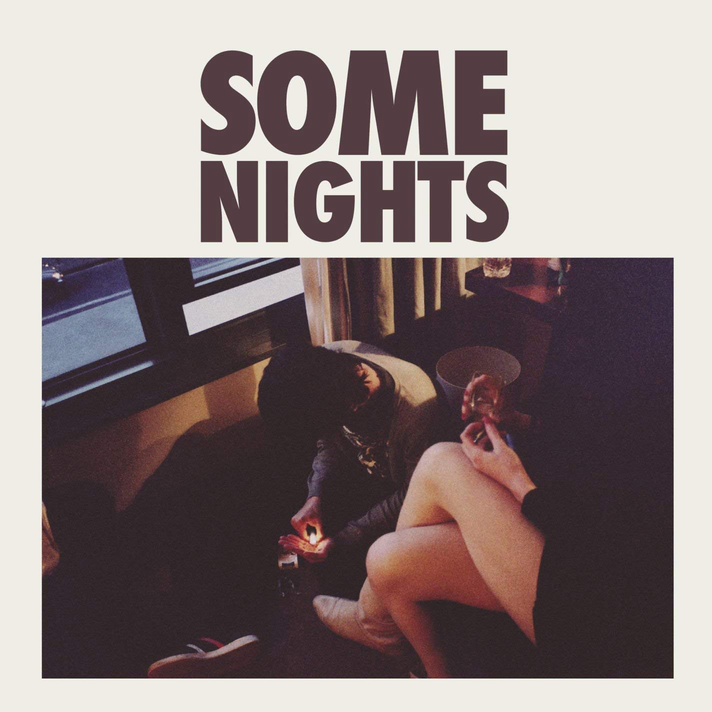

"Some Nights" is a song by American indie pop band Fun. It was released on June 4, 2012, as the second single from their second studio album of the same name. The song was written by Jeff Bhasker, Nate Ruess, Andrew Dost, and Jack Antonoff. Musically "Some Nights" is an indie pop song with elements of power pop and progressive pop while the lyrics depict the protagonist having an existential crisis.
In the United States, "Some Nights" was a sleeper hit, spending approximately seven months on the Billboard Hot 100 before reaching a peak of number three for six non-consecutive weeks beginning the week of September 29, 2012. The song became Fun's second single to enter the chart's top ten, as well as their second song to be certified platinum in the U.S., after their previous single, "We Are Young". "Some Nights" was successful around the world, topping the singles charts of Australia, Israel and New Zealand, and it reached the top 10 in an additional nine countries, including Canada, the United Kingdom and the United States.